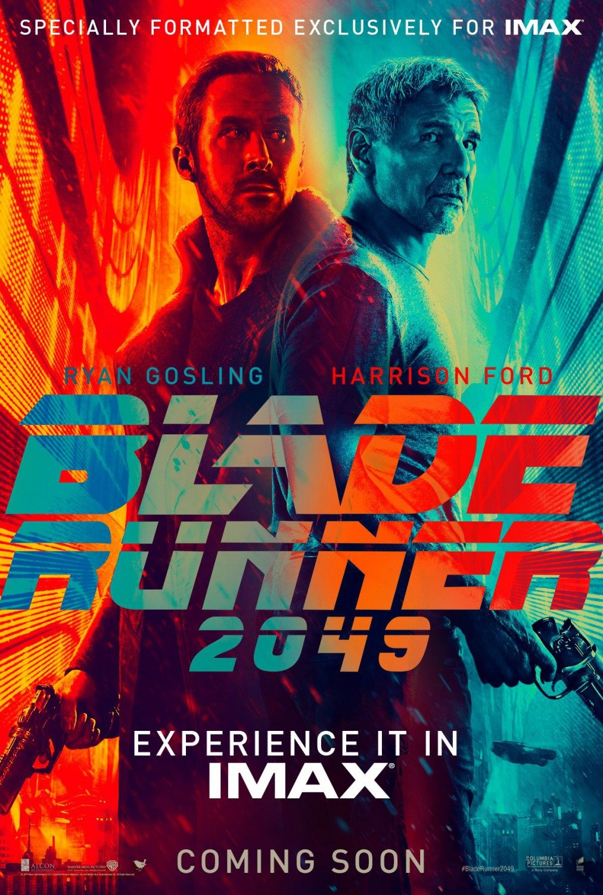
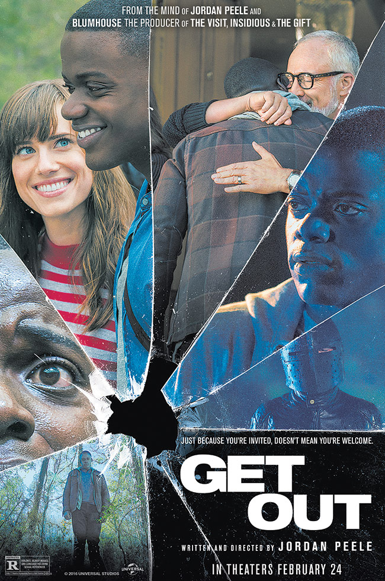
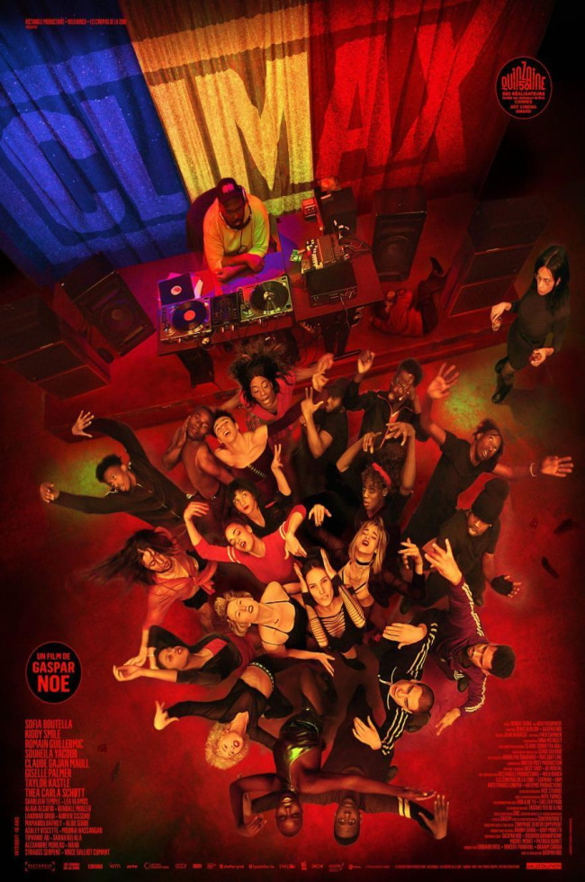
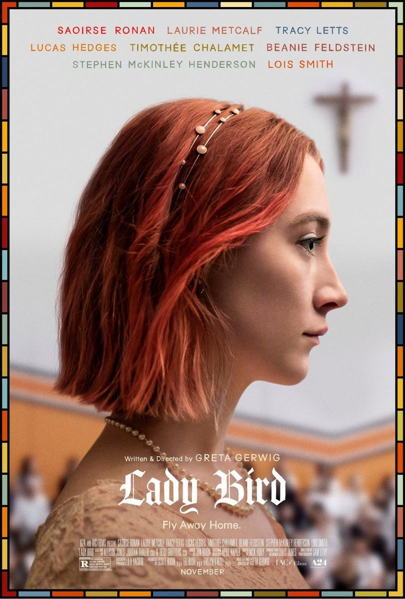

Lo más visto esta semana
1
Han pasado 30 años desde los acontecimientos ocurridos en Blade Runner (1982). El agente K (Ryan Gosling), un 'blade runner' caza-Replicantes del Departamento de Policía de Los Ángeles, descubre un secreto que ha estado enterrado durante mucho tiempo y que tiene el potencial de llevar a la sociedad al caos. Su investigación le conducirá a la búsqueda del legendario Rick Deckard (Harrison Ford), un antiguo blade runner en paradero desconocido, que lleva desaparecido 30 años.
2
3

4
5
